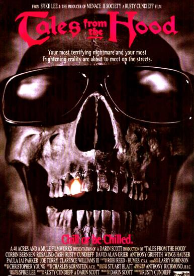

Numbering continues from Crypt Tales #19.
Tales from the Crypt was an American bi-monthly horror comic anthology series published by EC Comics from 1950 to 1955, producing 27 issues. (The first issue with the title was #20, previously having been International Comics (#1-#5); International Crime Patrol (#6); Crime Patrol (#7-#16) and The Crypt of Terror (#17-#19) for a total of 46 issues in the series.)
With the subsequent imposition of a highly restrictive Comics Code, EC Comics publisher Bill Gaines cancelled Tales from the Crypt and its two companion horror titles, along with the company's remaining crime and science fiction series in September 1954. All EC titles have been reprinted at various times since their demise, and stories from the horror series have been adapted for television and film.
HBO's Tales from the Crypt, is an American horror anthology television series that ran from June 10, 1989 to July 19, 1996, on the premium cable channel HBO for seven seasons with a total of 93 episodes.
Because it was aired on HBO, a premium cable television channel, it was one of the few anthology series to be allowed to have full freedom from censorship by network standards and practices. As a result, HBO allowed the series to include content that had not appeared in most television series up to that time, such as graphic violence, profanity, sexual activity and nudity.
Originally the Crypt theatrical films were planned as a trilogy. "They felt that in order to make this thing work, we had to do it essentially like the series, which began with three half hour episodes, so we decided to do three movies," Joel Silver told Fangoria magazine in 1995. Ultimately three films were made, but the trilogy did not pan out as originally intended.
Two movies, Demon Knight (1995) and Bordello of Blood (1996) were released in theaters. A third movie, Ritual, was initially slated for theatrical release in 2001, but was instead distributed internationally without the Tales from the Crypt connection. In 2006, it was released on DVD in the United States with all previous Crypt references restored.

As a follow-up to Demon Knight, producers planned to make a film titled Dead Easy (a.k.a. Fat Tuesday), a New Orleans zombie romp. "We were rewriting it, and it was getting scarier and more intense, but a lot of the humor had been lost, and we always felt that was an important part of Tales from the Crypt -- scare people, then let them laugh." Gilbert Adler told Fangoria in 1996. The third film that was planned, Body Count, also never found its way to the screen.